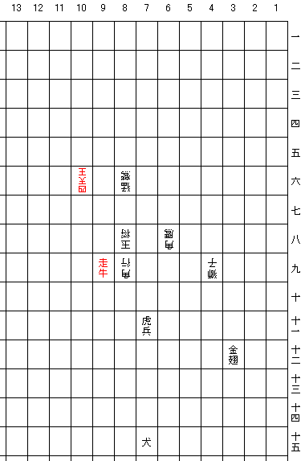

大局詰将棋 No.1 正解
問題1の解答です。

作意手順
▲７十一羊兵成、△７八玉将、▲８九龍王、△同角行、▲３十二金翅、△８八玉将、▲１０六 四天王、△同四天王、▲９九走牛 まで９手詰
解説
初手は(1) ▲３十三 四天王または(2) ▲４十二金翅が有力に見えるが、
- ▲３十三 四天王に対しては△７八玉将と逃げる。９十と７六の逃げ道を同時に防ぐには▲７十二金翅くらいしかないが、そうすると今度は５六から逃げられるので、詰まない。
- ▲４十二金翅に対しては△７八玉将と逃げて、以下▲７十二金翅、△７九角鷹、▲１１八金翅成、△８八角鷹にて、かろうじて逃れている。
そこで、初手▲７十一羊兵成であるが、この手は△７八玉（本手順）、(1) △同玉将、(2) △８八玉将のいずれでも詰まないように見えるため、指しにくい手である。ところが、初手▲７十一羊兵成に対し、
- △同玉将は、▲８十一 四天王、△７九玉将、▲７十二金翅、△５九玉将、▲７十一金翅まで
- △８八玉将は、▲８十二金翅、△７八玉将、▲１１十二金翅、△８八玉将、▲１１八金翅成まで
といずれも詰むために、本手順の通り△７八玉と逃げることになる。ここで▲８九龍王と捨てるのが、気づきにくい手。△同角行とさせて８九、９十一の逃げ道を塞いでから、▲３十二金翅と寄る。△８八玉将に対して、▲１０六 四天王の捨て駒で四天王の効きをそらしてから、▲９九走牛で詰め上がりとなる。
初手の変化と紛れ、龍王、四天王の捨て駒、走牛による詰み上がりと、うまくまとまった作品だと思う。攻め方の駒は、７十五の犬を除いてはすべてさばけるところも気に入っている。
詰め上がり図

作品一覧に戻る
Copyright (C) 2003 Katsutoshi Seki. All
rights reserved.